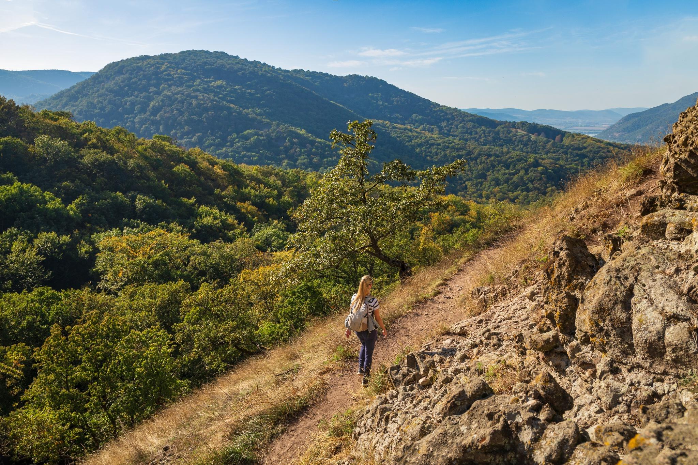
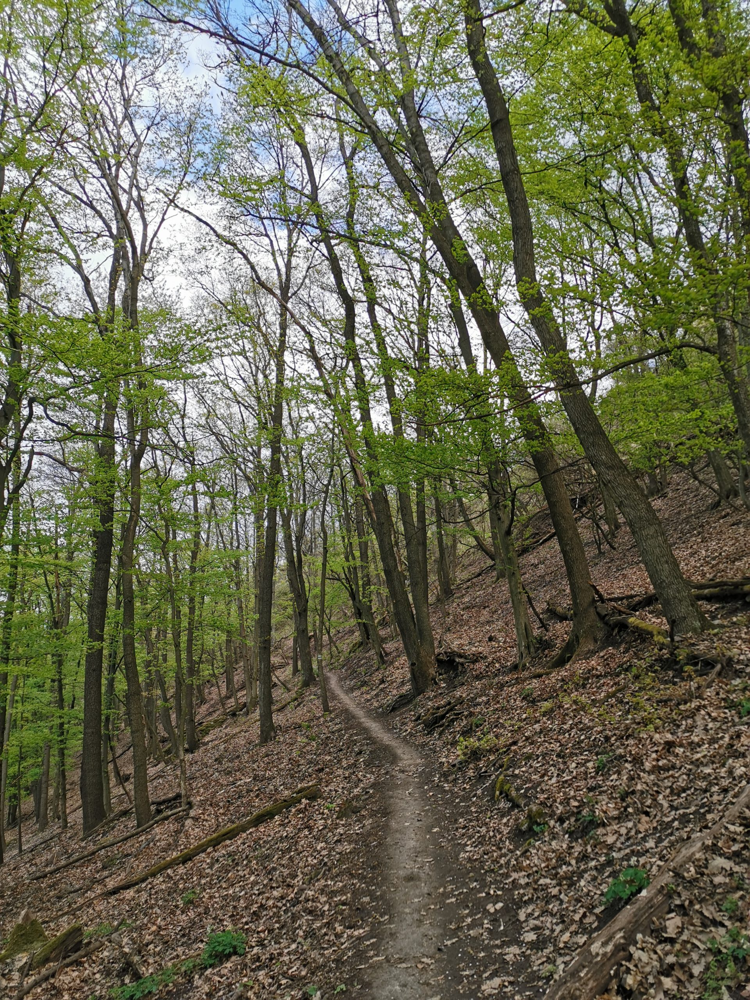
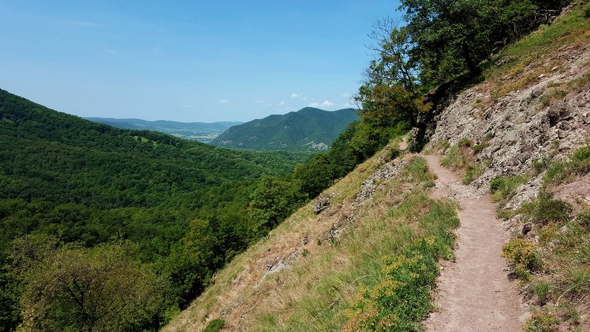
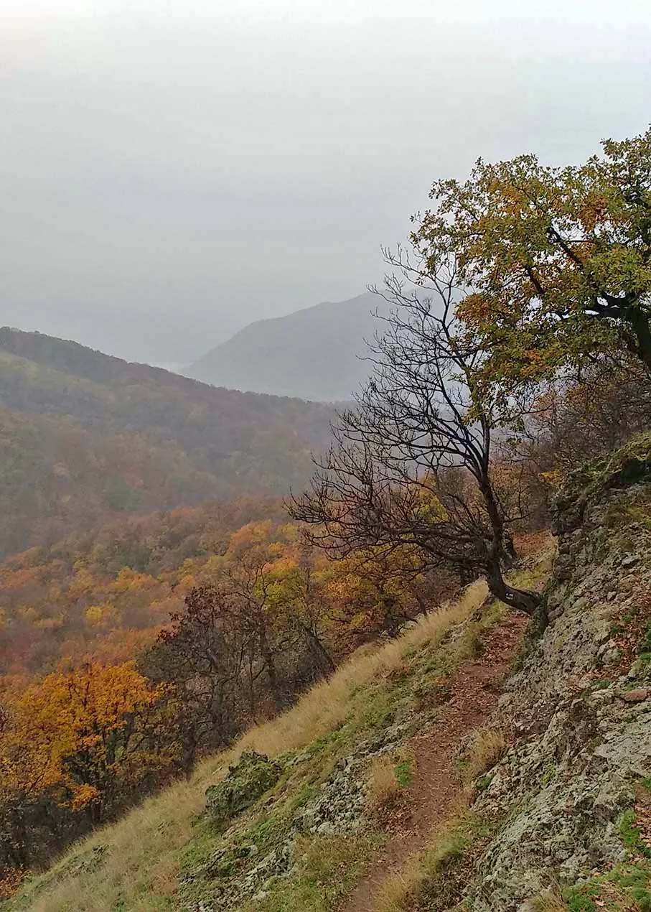
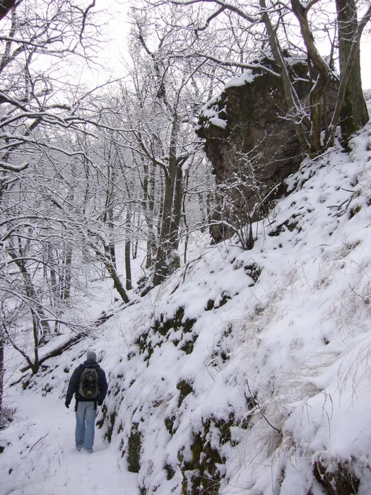

Miért szeretem a Spartacus-ösvényt?

A Spartacus-ösvény az egyik kedvenc helyem, ahová már többször is visszatértem. Szeretem, hogy nincs akkora tömeg, mint sok más népszerű kirándulóhelyen, így tényleg ki lehet kapcsolódni. Az útvonal nagy része erdőben vezet, és útközben nagyon szép kilátás nyílik a környező hegyekre.
Saját tapasztalataim
Már több alkalommal jártam itt, és szerintem az egyik legjobb dolog benne, hogy minden évszakban teljesen más hangulata van. Ősszel különösen szép, amikor a fák sárga és narancssárga színekben pompáznak, télen pedig egészen más látványt nyújt a kopár vagy havas erdő.
Ami nekem még nagyon tetszik, hogy általában nincs túl sok ember, ezért nyugodtan lehet sétálni és élvezni a természetet. Viszont nem minden része egyszerű. Vannak egészen keskeny szakaszok, ahol az egyik oldalon meredek hegyoldal van, ezért oda kell figyelni, hová lépünk.
A Spartacus-ösvény négy évszakban

Tavasz
Tavasszal minden kizöldül, és az egész erdő sokkal élénkebb lesz. Ilyenkor különösen jó érzés a természetben sétálni.

Nyár
Nyáron a sűrű fák sok helyen árnyékot adnak, de a melegben azért fárasztóbb lehet a túra. Érdemes elegendő vizet vinni.

Ősz
Nekem az ősz az egyik kedvenc időszakom itt. A színes falevelek miatt az egész erdő nagyon szép, ráadásul az idő is kellemesebb a kiránduláshoz.

Tél
Télen sokkal csendesebb és egészen különleges hangulata van az erdőnek. Hóban nagyon szép, viszont a jeges, csúszós részek miatt ilyenkor óvatosabbnak kell lenni.
Amire érdemes figyelni
Bár nagyon szeretem ezt a helyet, kezdőknek nem feltétlenül ez a legegyszerűbb túraútvonal. Egyes részek keskenyek és meredekek, eső után pedig csúszósak lehetnek.
Amit mindenképpen ajánlok:
- Megfelelő, csúszásmentes túracipő
- Elegendő víz és ennivaló
- Feltöltött telefon és térkép
- Az időjárás ellenőrzése indulás előtt
- Óvatosság a keskeny szakaszokon